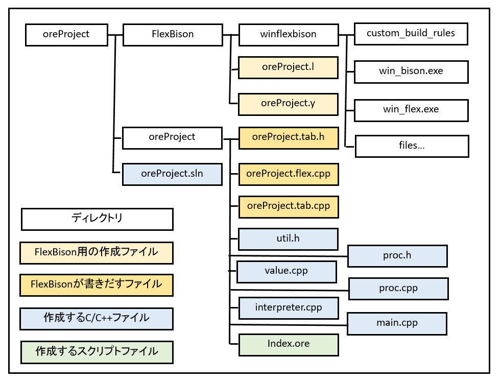
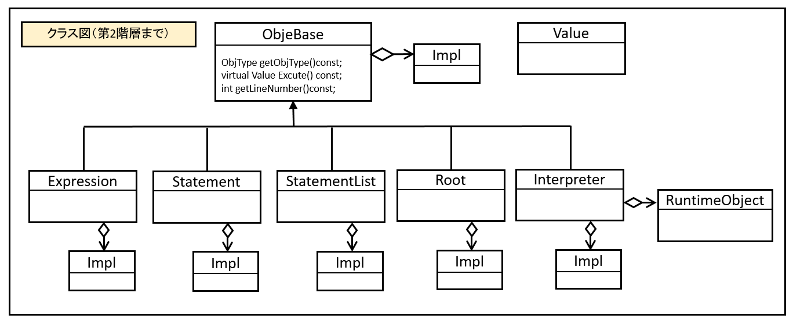
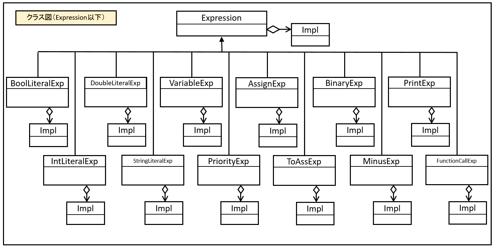
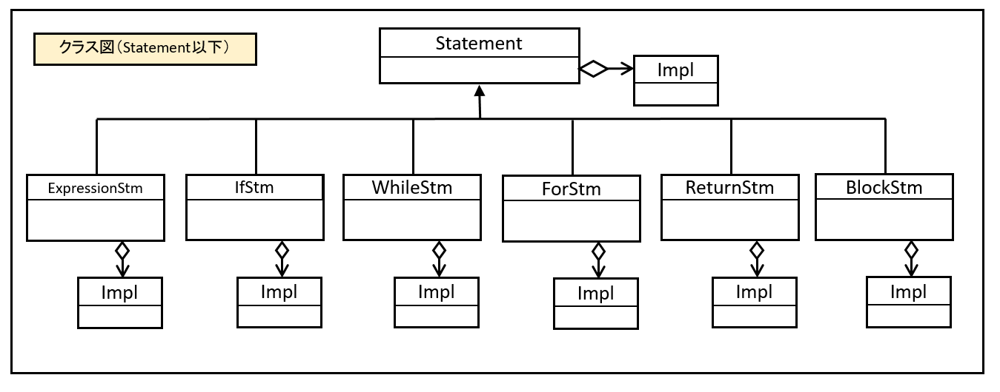

０４－０３．全体の構成とクラス図
現時点で、ファイルの構成は以下のようになっています。

図040301
クラス図
以下クラス図です。まず第２階層までです。

図040302
ここで注意したいのは、それぞれ
Implという名の
子供クラスを所持しているところです。
このクラスは
構造体で、cpp側に記述があります。
この
Implはいったい何を行っているのでしょうか。実体は
メンバ変数をまとめるオブジェクトです。
メンバ変数は通常は
クラス宣言に記述します。しかし、こうすると
libファイルなどで供給する場合、C/C++言語の場合は
ヘッダファイルを一緒につけなければなりません。これは
libファイルを使う人に対して構造を暴露する形になるので、最近ではセキュリティ上も好ましくない、とされています。
しかしながら
oreProjectは別に
libファイルで供給するものでもないし、ソースはこの通り全公開されているので、気にする必要はありません。
しかし
Impl（Implイディオムという人もいる）を使うメリットは、もう一つあります。
それは
cpp側で使用するライブラリを隠蔽することができるのです。
たとえば
proc.cppのインクルード部を見てみましょう。
#include <cstdlib>
#include <iostream>
#include <string>
#include <set>
#include <map>
#include <vector>
#include <list>
#include <memory>
#include <typeinfo>
#include "util.h"
#include "proc.h"
using namespace std;
という記述になっています。しかし、
proc.hには何もインクルードされていません。
以下、例えば、
stringリテラル式クラスのImplですが
struct StringLiteralExp::Impl {
string m_StringLiteral;
};
のようになっています。
STLの文字列クラスの
stringが実装されています。
WinFlexBisonは
VisualStudioで使用できる
cppの定義ファイルを提供しています。
通常、
プログラミング言語制作は
C言語で組まれます。
しかし、この時期（つまり２０１８年時点）で、
C言語オンリーというのはあまりにも古く、オブジェクト指向がなにも使えないのは、はっきり言ってきついです。
そこで
oreProjectは
C++の機能をふんだんに使って記述しようと思っています。
WinFlexBisonはそういう意味では大変ありがたい環境なのですが、
STLを使用すると、
型のmax値などのマクロで再定義される警告がでます。警告は
放っておいてもよいという人がいますが、僕自身は
警告はそのままにはしておけないたちなので、その打開策として
Implを使用することにしました。
また、こうしておいたほうが、将来、例えば
Linuxに移植したとしても、
BisonやFlexのインターフェイスの部分を
C言語に書き換えることも簡単になります。
逆に
util.hは、
STL使用を前提とするヘッダファイルなので
BisonやFlexからは見えない形でインクルードしています。
以下は
Expressionを親クラスとする階層です。
今後も増える予定ですし、まだ全部は実装されていません。

図040303
以下は
Statementを親クラスとする階層です。
今後も増える予定ですし、まだほとんど実装されていません。

図040304
クラス図だけ
ポンと渡されても、何のことやらかと思います。
次項からは詳細に
oreProjectの仕組みについて解説します。